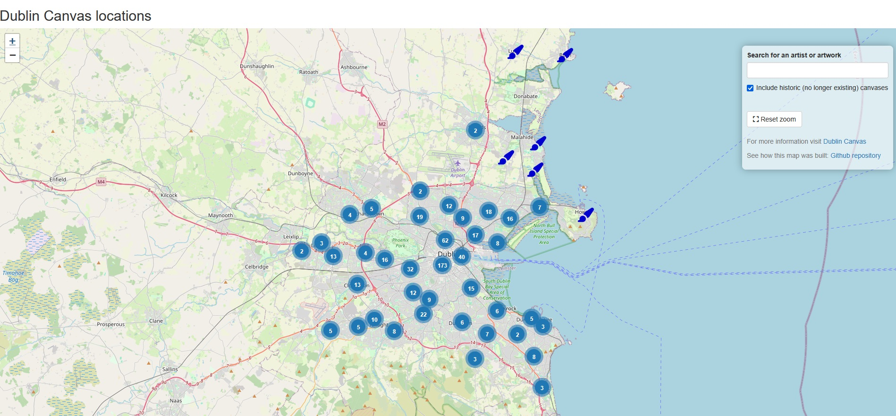

Dublin Canvas Interactive Map
An interactive map showing the locations of public artworks around Dublin with images and links for more information. Created with R, Shiny and Leaflet.
Behavioural Ecologist turned Data Scientist
Analytics • Modelling • Visualisation • Data wrangler and modeller
Turning complex datasets into insights
Currently open to opportunities — let’s connect!
An interactive map showing the locations of public artworks around Dublin with images and links for more information. Created with R, Shiny and Leaflet.
A monkey face-matching game made for public engagement events. Test your monkey ID skills! Created with R, Shiny
An interactive data visualisation to explore how changing paramters can impact infection and recovery rates.
I hold a PhD in behavioural ecology and have published research on topics such as machine learning and computer vision in wildlife biology, social network analysis, and behavioural experiments, as well as contributing analytical expertise to papers on COVID-19 hospital outcomes.
You can explore my publications and research contributions here:
I have a PhD in behavioural ecology, where I specialised in analysing complex datasets to uncover patterns in behaviour. My work involves computer vision, machine learning, statistical modelling, data wrangling, and data visualisation. I’m now transitioning from academia into data science, where I aim to apply my analytical and problem-solving skills to real-world challenges.
R • Tidyverse • Shiny • Python • pandas • scikit-learn • PyTorch